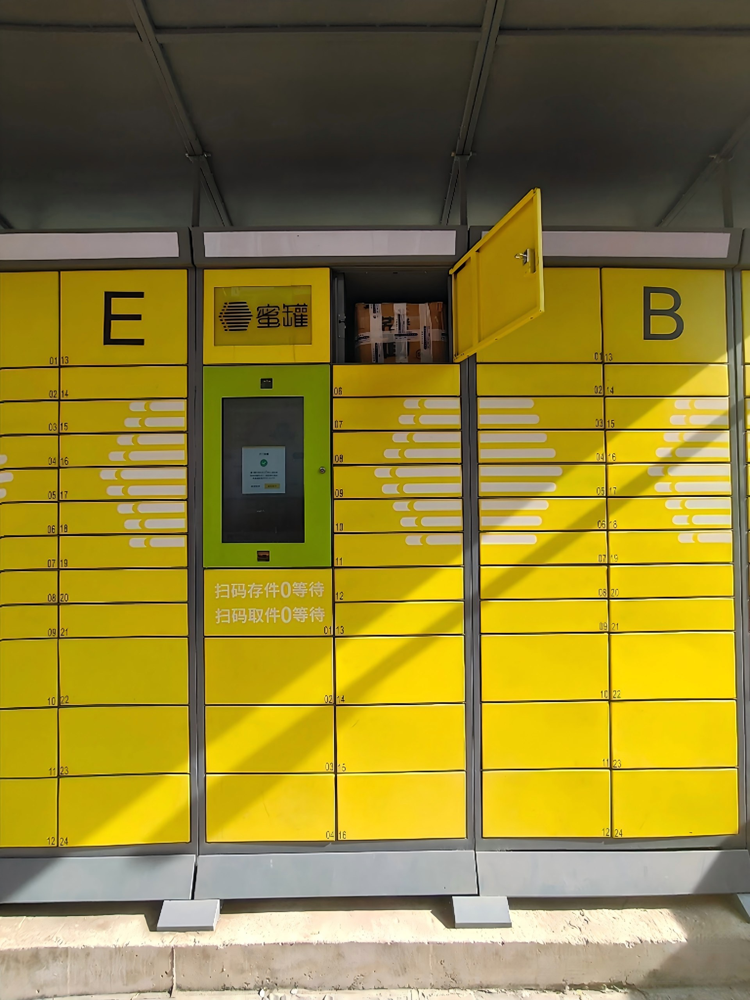
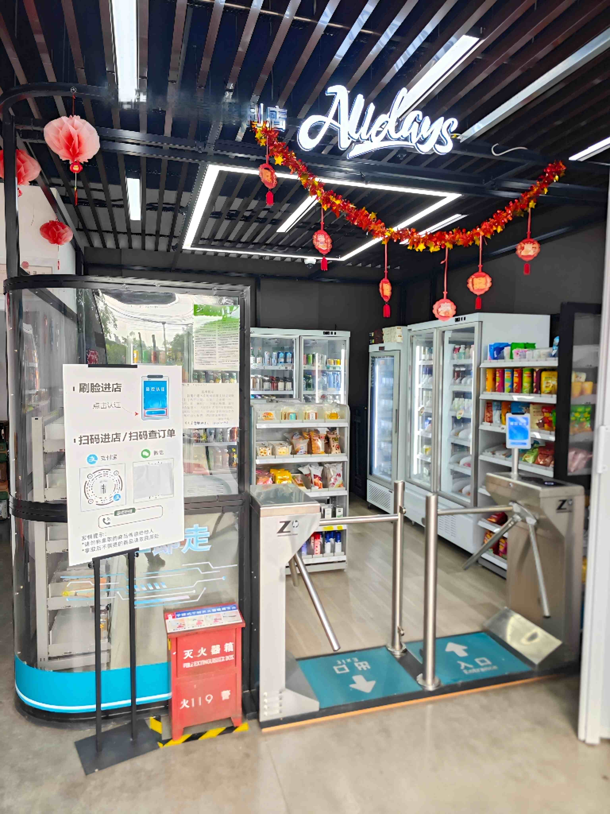
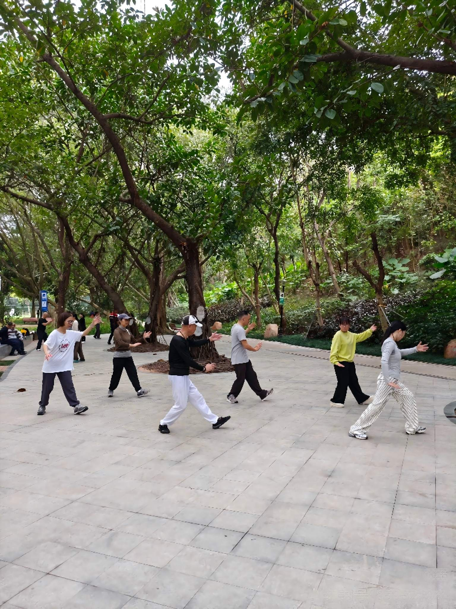
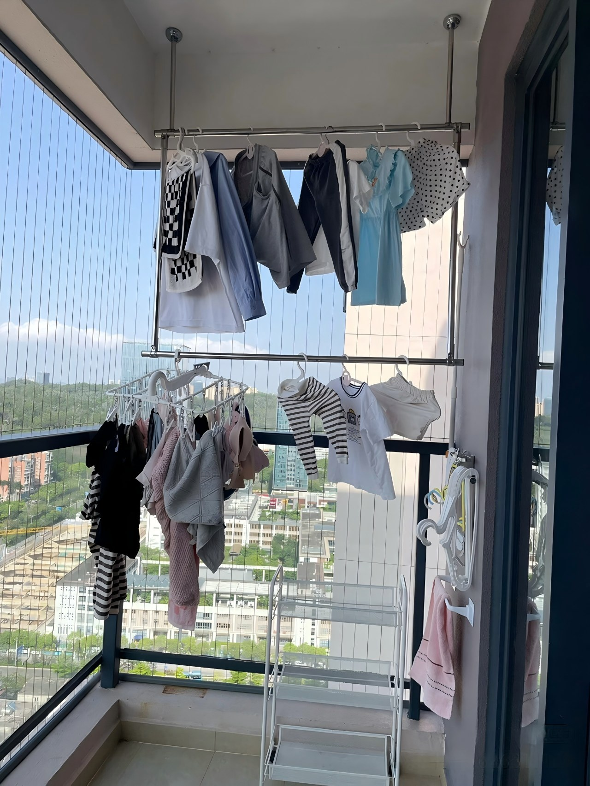

Local Daily Routines Visitors Should Know
TL;DR: The Short Version
- Shared bikes are a reflex, not a plan. Locals scan one without thinking. You can too.
- Packages go into smart lockers, not doorsteps. Many apartment complexes have rows of them. You get a code, you pick it up.
- Late-night life is quiet but alive. Food delivery usually runs past midnight. Convenience stores never close. Streets stay lit.
- Morning exercise is a public event. Parks fill up at dawn with tai chi, badminton, and group dancing. Join or just watch. Both are normal.
- These are not tourist activities. They are how people live. Understanding them turns your trip from observation into participation.
None of This Is a Tourist Activity
There is a version of travel where you visit the famous pagoda, take a photo, and move on. Then there is the version where you wake up on your third morning in China, walk to the corner convenience store for a bottled tea, scan a bike without thinking, and realize you're moving through the city the same way everyone else does.
This page is about the second version. The small routines that locals do without thinking. The ones that aren't in guidebooks, because they're too ordinary to mention. But they're exactly what makes a trip feel smooth instead of foreign.
None of these require special skills. Most require Alipay and a phone. Most take less than a minute to learn. Once you know them, your trip shifts from "figuring things out" to "just living here for a while."
Shared Bikes: The Two-Second Decision
Walk out of a metro station in many major Chinese cities and watch what locals do. They don't look for a taxi. They don't open a ride-hailing app. They walk to the row of blue, yellow, and green bikes parked along the curb, open Alipay, scan a QR code, and ride away. The whole sequence takes five seconds. It's not a decision. It's a reflex.
The bikes are everywhere because the system is designed around them. Metro stations have designated bike parking zones. Bike lanes on main roads are wide, separated from car traffic by barriers or curbs, and used by thousands of people every hour. At rush hour, the bike lane is often faster than the car lane next to it.
What surprises visitors most is how natural it feels. You get off the metro, scan a bike, and ride the last kilometer to your destination through tree-lined back streets. No waiting. No negotiation. No meter. Just your phone, a bike, and wherever you're going.
For travelers, this means you can stop thinking about "how to get around" and just go. Metro station to restaurant: bike. Restaurant to hotel: bike. Hotel to park: bike. The system disappears, and you just move.
Smart Parcel Lockers: How Packages Arrive in China
In most countries, a package delivery means someone rings your doorbell or leaves a box on your doorstep. In China, the sheer volume of packages makes door-to-door delivery impractical for most courier companies. SF Express (顺丰) and JD Logistics (京东物流) are the exceptions: they typically deliver to your door. Everyone else drops packages at the nearest smart locker or parcel pickup station. And that is where you'll find them: smart lockers in many apartment complexes and office buildings, and pickup stations like Cainiao (菜鸟驿站) on many residential neighborhoods.
Smart lockers are gray or yellow metal cabinets with touchscreens, each a wall of numbered compartments. Parcel pickup stations are small storefronts where packages are organized on shelves by pickup code. During the day, staff scan your phone and hand you the package. At night, the stations stay open as self-service: find your package by code, scan it yourself at the checkout machine, walk out.
The locker system is fully self-service. You order something online. A delivery rider deposits it into a compartment. Your phone receives a text message with a pickup code. You walk to the lockers, tap the code into the screen, and the door pops open. Grab your package. Close the door. Done. You usually have 24 to 48 hours before the system sends a reminder. The most common locker brand is Fengchao (丰巢).
Parcel pickup stations work similarly. During the day, staff are on hand: you show the pickup code on your phone, and someone retrieves your package in seconds. At night, the stations stay open as self-service. No staff, no counter. You walk in, find your package on the shelf using the code, and scan it yourself at the checkout machine. It feels a bit like a small library. These stations handle larger items that don't fit in lockers and many are open late or self-service. Between lockers and pickup stations, the system covers most everyday deliveries. Nobody needs to be home. Nothing sits on a doorstep in the rain.
For travelers, this means you can order something online and pick it up on your schedule. No waiting at home. No missed deliveries. Lockers and pickup stations are common in many cities, though the exact setup varies by building and neighborhood. This matters most if you're staying more than a few days or ordering online during your trip.

Late-Night Life: Not Loud, but Never Fully Asleep
Chinese cities at midnight are not party cities in the Western sense. The streets are not full of bars and nightclubs. But they are not empty either. What you get instead is something quieter and, in its own way, more remarkable: a city that never fully powers down.
Convenience stores are open 24 hours. Some pharmacies and convenience delivery options run late or overnight in major cities. Food delivery apps have full menus available past midnight. You can order a bowl of hot noodles at 1 AM and a rider will bring it to your door in 30 minutes. Street food stalls in residential neighborhoods stay open late, their lights visible from blocks away, a few plastic tables set up on the sidewalk with people eating skewers and drinking beer.
This is not a nightlife scene. It's infrastructure. The delivery rider working at midnight is the same person who delivered lunch eight hours earlier. The convenience store clerk restocking shelves at 2 AM will sell you a bottle of water and a pack of tissues without blinking. The city is not partying. It's just always running.
For travelers, this means jet lag stops being a problem. You land at midnight, you can still eat. You wake up at 4 AM and can't sleep, there's a convenience store with hot tea two blocks away. The city is ready when you are.

Morning Exercise: The Park Comes Alive at Dawn
If you walk through a Chinese city park at 6:30 AM, you will see something that looks like a festival. Groups of older people doing tai chi in slow, synchronized motion. Others walking backwards on the paved paths, swinging their arms in wide circles. A badminton game without a net. Someone playing a traditional instrument under a tree. A circle of women dancing to a portable speaker. None of this is organized or ticketed. It's just what happens in parks every morning.
This is a deeply embedded cultural routine. For many older Chinese people, morning exercise in the park is as routine as brushing teeth. It's social, it's physical, and it's free. The groups are informal but regular. Same people, same spot, same time, every day. You don't need to join, but standing at the edge and watching is completely normal. Nobody will think you're strange. They might smile at you.
Public exercise equipment is everywhere too. Not just in parks, but along sidewalks, in residential courtyards, next to bus stops. Elliptical machines, leg presses, waist twisters, all made of brightly painted metal and built to live outdoors. They look like playground equipment for adults, which is exactly what they are. They're free, they're always open, and they're surprisingly fun.
For travelers, this means your morning walk becomes something to look forward to. The park is already alive. You're not intruding. Bring a bottle of tea and find a bench. That's the routine.

Small Routines You'll Notice Everywhere
Beyond the big patterns, there are smaller daily rhythms worth knowing. None of them are essential. All of them make the trip feel more natural:
Clothes Drying on Balconies
Walk through any Chinese neighborhood and look up. Every balcony tells the same story: shirts, pants, bedsheets, and quilts draped over extendable metal racks, catching the morning sun. This is not because dryers are unavailable. Most households have a washing machine, and washer-dryer combos are increasingly common. The real reason is simpler: sun-dried clothes and bedding carry a warm, clean scent that no dryer can replicate. In Chinese, people call it "太阳的味 — — the smell of sunshine. It's one of those small, sensory pleasures woven into daily life. Hotels have laundry services. Airbnbs have a drying rack on the balcony. By day two, your clothes will be hanging out there too, and you'll get it.

Communal Dining Is the Default
In most restaurants, dishes are ordered for the table, not for individuals. A group of four might order five or six dishes, all placed in the center, everyone taking portions with their own chopsticks. There is usually at least one shared serving spoon or pair of communal chopsticks per dish. Among family members or close friends eating at home, people might pick directly from the shared plates without using the serving utensils. At restaurants and with acquaintances or colleagues, using the serving spoon or communal chopsticks is the norm. If you are unsure, watch what others at your table do and follow their lead. The rice is in a separate bowl, and you take what you want from the shared dishes throughout the meal. If you are eating alone, order two dishes. Nobody will think it is strange. Eating well in China often means variety, not volume.
Umbrellas Are for Sun, Not Just Rain
On a sunny summer day in China, you will see hundreds of people walking with umbrellas. This is sun protection. Pale skin is culturally valued, and direct sunlight is avoided. Women in particular carry UV-blocking umbrellas. If it's 35 degrees and you're the only person on the street without an umbrella, you're not cool. You're just getting sunburned. Buy a UV umbrella at any convenience store for ¥30 to ¥60.
Tipping Is Usually Not Expected
There is no tipping culture in China. Not in restaurants. Not in taxis. Not for delivery. Not for haircuts. The price on the menu or the app is the final price. If you leave cash on the table after a meal, the staff will run after you to return it, genuinely confused. This is one of the hardest habits for Western travelers to break. The first time you walk out of a restaurant without leaving anything extra, it feels like you forgot something. By day five, it feels like freedom.
Why These Routines Matter
Travel is partly about famous places. The Great Wall. The Bund. West Lake. But the part of travel that changes how you feel about a country is the ordinary stuff. How people get to work. What they eat at midnight. Where their packages go. What their mornings look like.
These routines matter because they turn a foreign city into a familiar one. The first time you scan a shared bike without hesitating, or pick up a package from a smart locker without reading the instructions, or walk past a group of morning dancers and don't even slow down, you've crossed a line. You're not watching China anymore. You're just living in it.
A traveler I hosted last spring put it this way: "The first two days, I felt like I was on a movie set. Everything was familiar but slightly wrong. By day four, I was drying my socks on the balcony and picking up packages from the locker like I'd done it my whole life. That's when the trip got good."
Get the Free China Arrival Checklist
The routines on this page become second nature fast. Start with the practical stuff: Alipay, eSIM, VPN. Free PDF, no spam.
Get the Free Checklist